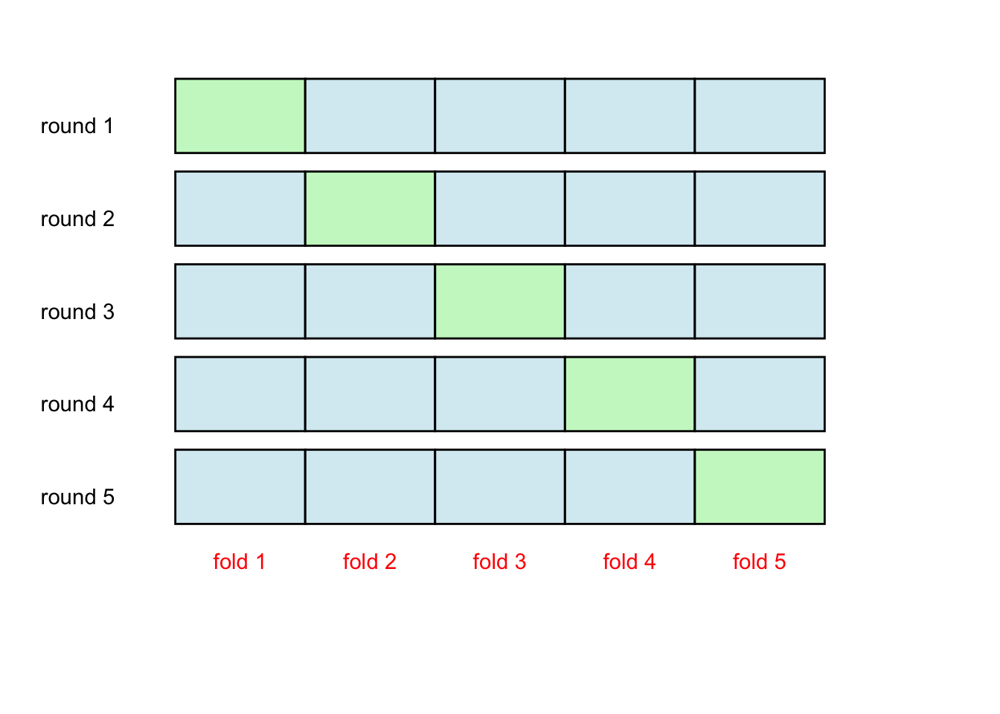

3.11 Cross-fitting
What is cross-fitting?
- Divide the data into K folds randomly.
- Train the model using \(-k\) folds (all folds except the \(k^{th}\) one).
- Generate a fit of fold k on the model trained using \(-k\) folds
- Repeat steps 2 and 3 to generate fit for all \(K\) number of folds.
This is illustrated using the figure below. The data is randomly divided into 5 folds (segments). This is an example of a five-fold cross-fitting. In the first round, the blue segments are used for model building, while responses are constructed for observations in the green segment of the data. Next, we move into the second round and so on; again the blue segments are used for model building and responses are constructed for the green segment. In this way, each observation is used for model building.
# cross-fitting illustration
colorcode <- diag(5) # this creates a coding
colorcode <- c(colorcode)
# Create data for the boxes
boxes <- data.frame(
x = rep(seq(2, 10, 2), 5),
y = rep(seq(5, 1, by = -1), each = 5),
label = rep(paste("fold", seq(1, 5), sep = " "), 5),
colorcode = colorcode
)
boxes <- boxes %>%
mutate(fill = ifelse(colorcode == 1, "lightgreen", "lightblue")) %>%
select(-c(colorcode))
# Create the plot
ggplot() +
geom_rect(data = boxes, aes(xmin = x , xmax = x + 2, ymin = y - 0.3, ymax = y + 0.5, fill = fill),
color = "black", alpha = 0.5) + xlim(0, 14) +
ylim(-1, 6) +
theme_void() +
scale_fill_identity() +
annotate("text", x = c(seq(3, 11, 2), rep(0.5, 5)), y = c(rep(0.3, 5), seq(5, 1, -1)), label = c(paste("fold", seq(1, 5, 1), sep = " "), paste("round", seq(1, 5, 1), sep = " ")), color = rep(c("red", "black"), each = 5)
)
What does it do?
Simply put, cross-fitting assures that the same observations are not used for modeling building as well as to estimate the response (e.g., predictions). In this way, we would want to alleviate concerns of over-fitting.